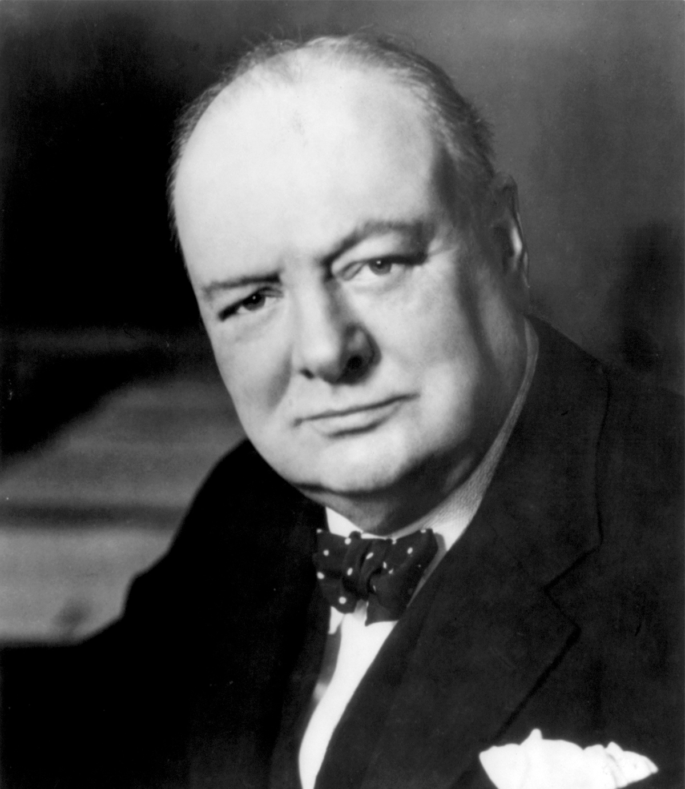

Browse door de geschiedenis
Invasie Polen
De invasie begon op 1 september 1939 met de Slag om Westerplatte. De Duitsers veroverden binnen vier weken het westelijk deel van Polen met een nieuwe tactiek, de Blitzkrieg oftewel "bliksemoorlog".
Lees meer 1 sep 1939 - 6 okt 1939Blitzkrieg
Begin 1940 bleek dat steeds meer gemotoriseerde Britse divisies in Noord-Frankrijk geconcentreerd werden. Die zouden sneller kunnen oprukken dan een normale Duitse divisie. Er moest dus een ander plan komen. Erich von Manstein keerde terug tot de klassieke methode en plande een omvatting van de vijand via een opmars door de Ardennen, een echte gemechaniseerde bewegingsoorlog.
Lees meer 10 mei 1940 - 20 sep 1940Winston Churchill
Winston Churchill was de Britse staatsman die als premier van 1940 tot 1945 Hitler weerstond en daarmee een beslissende rol in diens ondergang en de geallieerde overwinning heeft gespeeld.
Lees meer 30 nov 1874 - 24 jan 1965